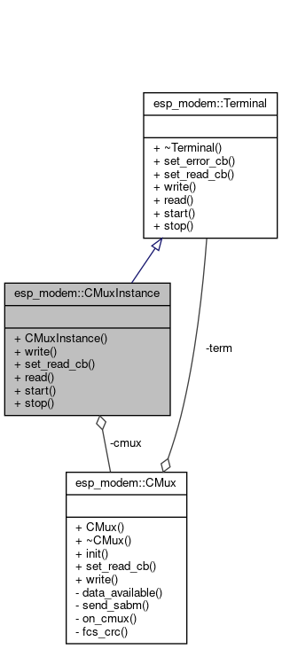

Internal design¶
Design decisions¶
Use C++ with additional C API
Use exceptions
Use macro wrapper over
try-catchblocks when exceptions off (useabort()ifTHROW())
Initializes and allocates in the constructor (might throw)
easier code with exceptions ON, with exceptions OFF alloc/init failures are not treated as runtime error (program aborts)
break down long initialization in constructor into more private methods
Implements different devices using inheritance from
GenericModule, which is the most general implementation of a common modemInternally uses templates with device specialization (modeled as
DCE<SpecificModule>) which could be used as well for some special cases, such as implantation of a minimal device (ModuleIf), add new AT commands (oOnly in compile time), or using the Module with DTE only (no DCE, no Netif) for sending AT commands without network
DCE collaboration model¶
The diagram describes how the DCE class collaborates with DTE, PPP and the device abstraction

Terminal inheritance¶
Terminal is a class which can read or write data, and can handle callbacks when data are available. UART specialization is provided implementing these method using the uart driver.
CMUX terminal¶
The below diagram depicts the idea of using CMUX terminal mode using the CMuxInstance class which is a terminal (it implements the basic read/write methods) interfacing arbitrary number of virtual terminals, but at the same time it is also composed of CMux class, which consumes the original terminal and uses its read/write methods to multiplex the terminal.
